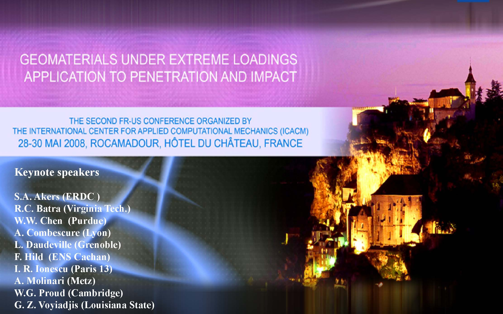
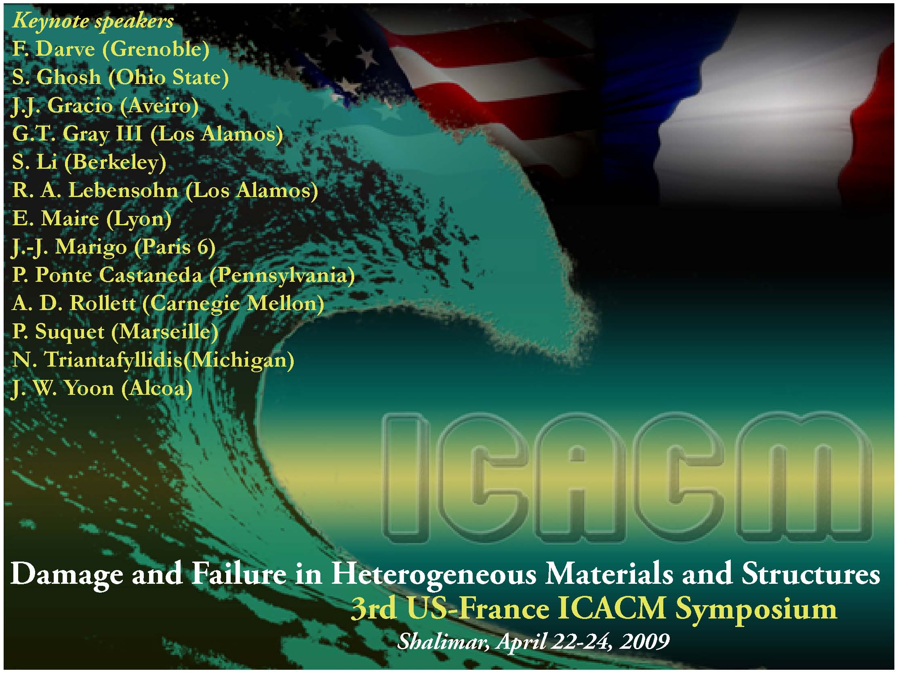
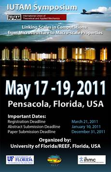
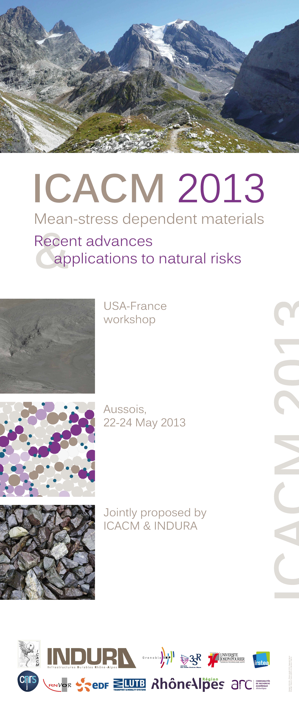

ICACM Home
Partners
Committee
Previous symposia
10
th
symposium
Publications
I
CACM
S
ymposia
University of Florida, REEF, Shalimar, 28-30 March 2007
Advances in Bridging Scales in Computation From Microstructure to Macro-Scale Properties of Heterogeneous Materials

DGA, CE Gramat, Rocamadour, France, 28-30 May 2008
Geomaterials under Extreme Loadings Application to Penetration and Impact

University of Florida, REEF, Shalimar, 22-24 April 2009
Damage and Failure in Heterogeneous Materials and Structures
University Paris 13, LPMTM, Paris, France, 2-4 June 2010
Scale transition in crystal plasticity. From experiment to numerical modeling

University of Florida, REEF, Pensacola, 17-19 May 2011
Scales in Computations: from Microstructure to Macro-scale Properties
Rutgers University, The Kimmel Center at NYU, 11-13 June 2012
The role of Structure on Emerging Material Properties

INP Grenoble/ Indura, Aussois, 22-24 May 2013
Mean-stress dependent materials: Recent advances & applications to natural risks
Rensselaer Polytechnic Institute, 10-11 June 2014
Multiscale Materials Modeling: Mathematical and Computational Aspects
Roberval Laboratory of Mechanics, University of Technology of Compiegne, 1-3 June 2016
From microstructure observations to multiscale modeling of deformation mechanisms and interfaces